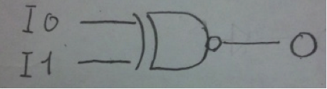
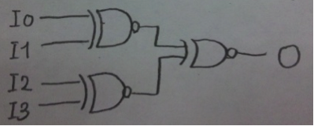
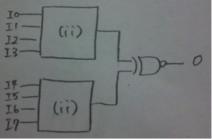
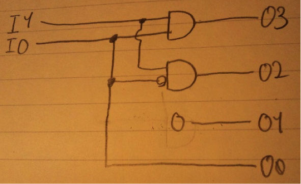

まず円盤の枚数が２枚の場合を考える。このとき上から円盤の番号を1,2とする。
1. 1をAからCに移動する。
2. 2をAからBに移動する。
3. 1をCからBに移動する。
以上の3手順が2枚の場合のハノイの塔のアルゴリズムである。これを一般化する。
N枚の円盤のうち1?N-1番の円盤をPとし、N番目の円盤をQとすると、円盤が2枚の場合と同じ問題になる。よって上記操作をHanoi(n,A,B,C)→（ｎ個の円盤を、AからBにCを補助的に使って移動する）と表すとすれば、
もしnが０より大きい時｛
Hanoi(n-1,A,C,B)
出力（N番の円盤をAからBに移動）
Hanoi(n-1,C,B,A)
｝
と表すことが出来る。
void Hanoi(int n, char A, char B, char C){
if(n>0){
Hanoi(n-1,A,C,B);
Printf( “ %c番の円盤 を %c から、 %c へ移動する。” , n,A,B);
Hanoi(n-1,C,B,A);
}
}
int main(){
Hanoi(n,A,B,C);
}
移動の回数をM(N)と表すとすれば、
M(1) = 1
N > 1 のとき、
M(N) = M(N-1) + 1 + M(N-1)
M(N) = 2*M(N-1) + 1
( M(N) + 1 )= 2*( M(N-1) + 1)
M(N) + 1 = 2^n
M(N) = 2^n - 1
よってM(10) = 2^10 -1 = 1024-1=1023
void F(int x, int y){
int a,b;
while(true){
…..S….
x = a;
y = b;
}
}
ソフトウェアの設計や開発において、操作手順よりも操作対象に重点を置いた考え方。関連するデータの集合と、そのデータに対するメソッドと呼ばれる手続きをオブジェクトと呼ばれる一つのまとまりとして管理する。このオブジェクトの組み合わせによってソフトウェアを構築する。
あるクラスが、複数のクラスの性質を継承すること。継承した複数のクラスの変数、メソッドなどのメンバを、再度宣言することなく再利用可能。
抽象クラスは実装の無い複数の抽象メソッドのみ持っていて、自身のオブジェクトを生成することは出来ないクラス。抽象クラスを継承するサブクラスで、未実装の抽象メソッドを実装する。サブクラスが持つべきメソッドを保証することが可能。
C言語での純粋仮想関数を例に説明する。スーパークラスで宣言する未実装の関数のことで、virtual void kansu_name() = 0;と書くことで宣言可能。宣言したクラスを継承する、派生クラスで再定義されることを意味する。
仮想関数とは、スーパークラスの派生クラスで再定義可能である関数のことを示す。
継承を実現するための仕組みであり、仮想関数は必ず仮想関数テーブルを持つ。仮想関数が呼び出されると、生成された仮想関数テーブルから関数名に対応するメモリアドレスにジャンプする。
アヒルのように見えて、アヒルのように鳴くならアヒルとみなすという考えをプログラム言語に取り入れたもの。オブジェクトがあるインタフェースの全てのメソッドを持っているなら、例えそのクラスがそのインタフェースを継承してなくとも、そのインタフェースを実装しているとみなす。C++ならテンプレートで実装可能。
無解答
実行中のプロセスから実行権を強制的に剥奪し、割り込みの要因に応じた処理を開始すること。ソフトウェア的な要因から起こるソフトウェア割り込み。ハードウェア的な要因から起こるハードウェア割り込みがある。
サブルーチンは予め予期されたものなのに対し、割り込み処理は予期されたものではなく、何をしていようと突然発生すること。
LOAD/STORE命令の直後に、LOAD/STORE命令で読み込んだ値を使うような場合はフォワーディング機構を用いたとしてもストールは避けることは不可能であり、つまりは3番目のADD命令以降続けてデータハザードが発生することが考えられる。
１→３ のR1のフロー依存
２→３ のR2のフロー依存
・・・
LOAD/STORE命令の直後に、LOAD/STORE命令で読み込んだ値を使わないようにすればよい。
| LOAD | R1 S0(4) | |
| LOAD | R2 S0(8) | |
| LOAD | R4 S(16) | //R2では無く、使われていないレジスタR4にS(16)を前もってロード |
| ADD | R3 R1 R2 | //2番目のロード命令とADD命令の間に命令が入ったことにより、ストールすることなく実行可能。 |
| STORE | S0(0) R3 | |
| ADD | R3 R1 R4 | |
| STORE | S0(12) R3 |
●：到着＆処理開始
○：到着&待ち状態
E：実行状態
空白：待ち状態
とすると、
| 0 | 1 | 2 | 3 | 4 | 5 | 6 | 7 | 8 | 9 | 10 | 11 | 12 | 13 | 14 | 15 | 16 | 17 | 18 | |
| A | ● | E | E | E | E | E | |||||||||||||
| B | ○ | E | E | E | E | ||||||||||||||
| C | ○ | E | E |
よって
応答時間は A : 6 , B : 9 , C : 10 なので、平均すると 25/3 となる。
プリエンプションが無い場合は到着時間順と全く同じ応答時間になる。よって25/3
| 0 | 1 | 2 | 3 | 4 | 5 | 6 | 7 | 8 | 9 | 10 | 11 | 12 | 13 | 14 | 15 | 16 | 17 | 18 | |
| A | ● | E | E | E | E | E | |||||||||||||
| B | ● | E | E | E | |||||||||||||||
| C | ● | E |
応答時間 A : 12 , B:6 , C : 2 より、平均応答時間は20/3となる。
(2)は2回のプリエンプションがあるので 25/3 + 2s
(3)は４回のプリエンプションがあるので 20/3 + 4s
25/3 + 2s > 20/3 +4s を解くと、
s < 5/6
多重レベルフィードバックスケジューリング方式は近似的に処理時間順スケジューリング方式を実装する方式である。
新しいプロセスは最も優先度の高いレベル０の待ち行列に入る。クオンタム切れによるプリエンプションが発生すると、そのプロセスは一つ上のレベルの待ち行列に入る。高レベルのプロセスは、低レベルのプロセスの処理が全て終わるまで実行権は回ってこない。これは、短い時間で終わらないプロセスは長い時間の掛かるプロセスである可能性が高いという経験則に基いている。
スタベーションの回避にはエージングが使われている。
・フォワーディング
他のホストから受け取ったパケットを別の経路へ向けて再送信すること。これを専門的に行う機器にルーターがある。
・ルーティング
目的のホストまでパケットを送信する際に、最適な経路を選択して送信すること。ネットワークの境界で、外部からのパケットを自分のネットワークにあるホストへ転送したり、自分のネットワークからのパケットを別のネットワークへ転送したりすることもルーティングと言う。ルータと呼ばれる機器がこの役目を担っている場合が多い。ルーティングは経路の情報をあらかじめネットワーク機器に設定しておくスタティックルーティングと、経路情報を動的に更新するダイナミックルーティングとにわかれる。
dx(y) : xからyへの最短経路のコスト
dv(y) : vからyへの最短経路のコスト
c(x,v) : 隣接するxからvへのコスト
dx(y) = c(x,v) + dv(y)
動的ルーティングアルゴリズムの一つ。
各ルーターはまず自分のネットワーク名をブロードキャスト。
この結果、各ルーターは自分に隣接するルーターの情報を得ることが出来る。
次にこの情報をまとめてブロードキャストすると、隣接ルーターのさらに隣接ルーターの情報が得られる。
dx(y) = c(x,v) +c(v,a) + c(a,b) + ・・・ + c(f,y)
???
(B*D)+(B*A)
(A*B)+(A*C)
(¬A*¬C)+(¬B*¬C)+(A*B*C)



入力をI1,I0とし、出力をO3,O2,O1,O0の２進数で表すとすれば、
| I1 | I0 | O3 | O2 | O1 | O0 |
| 0 | 0 | 0 | 0 | 0 | 0 |
| 0 | 1 | 0 | 0 | 0 | 1 |
| 1 | 0 | 0 | 1 | 0 | 0 |
| 1 | 1 | 1 | 0 | 0 | 1 |
O3 = I1*I0 , O2 = I1 * ¬I0 , O1 = 0 , O0 = I0 となるので、
